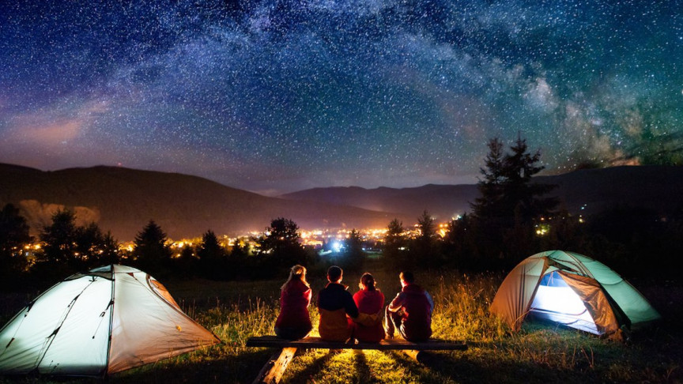

Welcome to my Travel Brochure! Are you torn between what kind of vacation you want to have with your family or even just by yourself to get away from work? Here you can find all the information you need to make the right choice on exactly what kind of vacation you'll take. There are many beaches, campsites, and cities that would welcome you with open arms and a welcoming stay!
As smooth sands covers your feet, you breathe in a mouthful of crisp air and around you lays a beach. Palm trees stooping down to greet you and kites sailing, the beach might be your perfect getaway. A place you can relieve your stress and get away from life, all with a beautiful view of the endless ocean. Many beautiful beaches exist, but for a cozy vacation, you might want to venture over to Hawaii. Hawaii features warm weather as well as warm waters, great for surfing and swimming.
As trees surround you and a starry night sky gazes down on you, you feel the breeze sifting through your hair. Going out camping is an amazing, thoughtful, and peaceful experience. A warm campfire and tasty marshmallows await you when night falls as well as good times with friends. Finding the right campsite can be difficult depending on location, popularity, and availability. However, camping brings isolation from the world while being surrounded with the select people you bring, or even just by yourself. With or without friends, camping is a unique way to escape from society.
Being in the city and observing from a distance can be such a captivating experience. A whole society lays right before your eyes. Going to a city with popular landmarks or attractions and interesting food is a great experience if you like finding and trying new things. Unlike going to the beach and camping, you are still around a lot of people so you won't be able to get complete silence at all times.